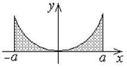
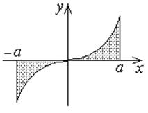

Свойства определенного интеграла
1.
Определенный
интеграл не зависит от обозначения переменной интегрирования
.
2.
Определенный
интеграл от суммы функций. Вынесение постоянной величины за знак дифференциала
,
 , –
постоянные.
, –
постоянные.
, –
постоянные.3.
Аддитивность
определенного интеграла по отрезку
,для
любых трех чисел  ,
,  ,
,
 .
.
, ,
. 4. Если
1)  интегрируема на ;
интегрируема на ;
интегрируема на ; 2)  для любых ,
для любых ,
для любых , тогда .
5. Если
1) ,  интегрируемы
на ;
интегрируемы
на ;
, интегрируемы
на ; 2) для любых ,
тогда: .
6. Если
1) интегрируема на ;
интегрируема на ; 2)  и
и  –
наименьшее и наибольшее значения функции ,
–
наименьшее и наибольшее значения функции ,
и –
наименьшее и наибольшее значения функции , тогда
Формула оценки
определенного интеграла
.
7. Если непрерывна на  ,
,
непрерывна на , то такая, что .
Число
Среднее значение
функции на отрезке
называется
средним значением функции на отрезке .
на отрезке .8. Если непрерывна на ,
.
непрерывна на ,
.9. Производная от интеграла по переменному верхнему пределу
равна
Производная от
интеграла по переменному верхнему пределу
10. Если функции  и дифференцируемы в точке и непрерывна
при , то
и дифференцируемы в точке и непрерывна
при , то
и дифференцируемы в точке и непрерывна
при , то
.
11.
 Формула
Ньютона-Лейбница для определенного интеграла
-
формула Ньютона-Лейбница.
Формула
Ньютона-Лейбница для определенного интеграла
-
формула Ньютона-Лейбница.
Формула
Ньютона-Лейбница для определенного интеграла
-
формула Ньютона-Лейбница.Для вычисления определенного интеграла от непрерывной
функции нужно:
нужно:1) найти первообразную  для
подынтегральной функции (по правилам вычисления неопределенного интеграла);
для
подынтегральной функции (по правилам вычисления неопределенного интеграла);
для
подынтегральной функции (по правилам вычисления неопределенного интеграла);2) вычислить .
12. Если
1) непрерывна на ;
непрерывна на ;2)  - непрерывно дифференцируема
на
- непрерывно дифференцируема
на
- непрерывно дифференцируема
на ( -
область значений при изменении );
-
область значений при изменении );3) , ,
тогда
Формула замены
переменной в неопределенном интеграле
–
формула замены переменной под знаком определенного интеграла.
13. Если
1) - четная ,
- четная ,то
Интеграл от
четной функции в симметричных пределах

2) - нечетная функция ,
- нечетная функция ,
Интеграл от
нечетной функции в симметричных пределах
.

14.
Формула
интегрирования по частям для определенного интеграла
.